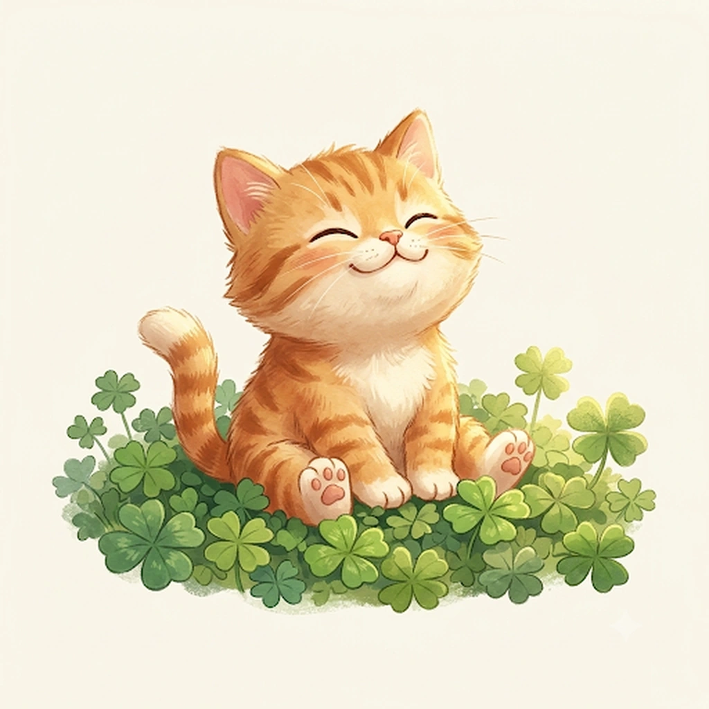

오늘 나에게 들어오는 기운과 주의할 점

성격, 직업, 재물, 연애, 가족, 대운까지
프리미엄 5,900원
두 사람의 끌림, 갈등, 결혼, 재물궁합까지
프리미엄 7,900원
10년 단위 대운과 올해의 흐름, 월별 운세
저장한 프로필로 더 빠르고 편리하게
처음 오셨나요? 귀인사주 이용방법을 안내해드려요.
내 명식 기준 심층 사주 리포트
성격·직업·재물·연애·신살·귀인·대운과 세운을 내 실제 입력값으로 계산해 결제 승인 후 바로 열람하는 디지털 서비스예요.
정확한 사주 분석을 위해
아래 정보를 입력해 주세요.
두 사람의 명식을 같은 기준으로 비교해요.
귀인사주가 처음이라도,
쉽게 이용할 수 있어요.
계산된 원국과 현재 흐름을 바탕으로 필요한 내용을 이어서 설명해드려요.
처음 3회는 무료예요. 답변 실패 시 무료 횟수나 이용권은 차감되지 않습니다. AI 사주상담 질문 패키지는 3회, 6회, 9회, 18회 단위로 구매할 수 있고 구매일로부터 30일간 사용할 수 있어요. 로그인하면 상담 기록이 계정에 저장되어 다른 기기에서도 이어볼 수 있어요. 로그아웃 상태에서는 기기 내 기록과 게스트 세션을 사용하며, 답변 생성에 필요한 대화 맥락이 서버로 전송될 수 있어요.
구매한 상품에 표시된 총 질문 횟수만큼 이용하는 디지털 서비스예요. 구매일로부터 30일간 사용할 수 있습니다.
처음 이용해보기 좋은 구매 후 30일간 사용하는 고정 질문 패키지예요.
결제 승인 후 총 6회의 질문이 한 번에 제공되며 구매 후 30일간 사용할 수 있어요.
결제 승인 후 총 9회의 질문이 한 번에 제공되며 구매 후 30일간 사용할 수 있어요.
결제 승인 후 총 18회의 질문이 한 번에 제공되며 구매 후 30일간 사용할 수 있어요.
✓ 처음 3번의 무료 질문은 별도로 유지됩니다.
✓ 패키지 질문 1회당 AI 사주상담 질문 1회입니다.
✓ 모든 패키지는 구매일로부터 30일간 사용할 수 있습니다.
✓ 추가 제공 질문은 결제 시 총 질문 횟수에 포함되어 한 번에 지급됩니다.
✓ 충전금·예치금·전자화폐가 아니며 현금 전환·양도·선물·다른 상품 구매에 사용할 수 없습니다.
✓ 결제가 승인되면 주문을 확인한 뒤 사용 가능한 질문 횟수가 자동 반영됩니다.
✓ 미사용·일부 사용 환불 기준은 결제 전 환불정책에서 확인할 수 있습니다.
이제 저장한 사주·이용내역·상담기록을 이 계정으로 이어서 사용할 수 있어요.
아이디 로그인이나 카카오 로그인으로 저장한 사주·구매내역·상담기록을 이어볼 수 있어요.
아이디와 비밀번호를 만들면 카카오 없이도 저장한 사주·상담·구매내역을 이어서 이용할 수 있어요.
로그인 정보를 안전하게 확인한 뒤
마이페이지로 자동 이동할게요.
잠시만 기다려 주세요.
승인된 결제와 구매 내역만 표시됩니다.
선호 설정은 현재 기기에 저장됩니다.
현재 발급된 쿠폰은 없습니다.
전화 상담은 제공하지 않습니다.
결제·이용·환불·사주 결과 관련 문의는 문의게시판을 이용해 주세요.
고객센터 대표번호 0507-1464-3343은 사업자 연락처로 안내됩니다.
결제 승인 후에도 구매한 내용이 열리지 않으면 결제 내역을 다시 확인한 뒤 고객센터로 문의해 주세요.
시주 관련 해석의 강도를 낮추고, 출생시간 없이 확인 가능한 부분과 구분해서 설명합니다.
아니요. 신살은 보조 정보입니다. 귀인사주는 신살 하나로 사건을 단정하지 않고 원국·오행·십신·대운과 함께 읽습니다.
귀인사주 엔진이 계산한 명식을 그대로 Worker에 전달하고, AI가 명식을 임의로 다시 계산하지 않도록 구성되어 있습니다.
좋은 인연이, 좋은 운을 만듭니다.
상품을 먼저 조회한 뒤 결제할 수 있어요. 결제 전 가격·제공 내용을 다시 확인합니다.
귀인사주는 무료 명식·운세·궁합·AI 상담과 프리미엄 평생사주·프리미엄 궁합·AI 사주상담 질문 패키지를 제공합니다. 상품별 가격, 제공 시점, 이용기간, 환불 기준을 결제 전에 표시하며 전체 약관 전문은 별도 페이지에서 바로 확인할 수 있습니다.
전체 약관은 이용약관 전문에서 확인할 수 있습니다.
사주 입력정보, 카카오 로그인 식별정보, AI 상담 내용, 주문·결제 상태 등은 서비스 제공에 필요한 범위에서 처리될 수 있습니다. 주민등록번호 등 고유식별정보는 서비스 운영을 위해 수집하지 않습니다.
수집 항목·이용 목적·보유기간·외부서비스 이용 내용은 개인정보처리방침 전문에서 확인할 수 있습니다.
프리미엄 리포트는 콘텐츠 제공 시작 전 7일 이내 청약철회가 가능하며, 제공이 시작된 뒤에는 사전 고지·동의를 전제로 청약철회가 제한될 수 있습니다. AI 질문 패키지는 미사용 시 구매 후 7일 이내 전액 환불, 일부 사용 시 미사용 질문 비율을 기준으로 환불합니다. 표시·광고 또는 계약과 다르게 제공된 경우에는 관계 법령상 별도 청약철회 기준을 적용합니다.
세부 기준은 환불정책 전문에서 확인할 수 있습니다.
점수보다 두 사람이 실제로 함께 있을 때의 장점과 갈등·회복·생활을 길게 풀어드려요.